3. Performance Benchmark with other packages
Source:vignettes/fundiversity_2-performance.Rmd
fundiversity_2-performance.RmdThis vignette presents some performance tests ran between
fundiversity and other functional diversity packages. Note
that to avoid the dependency on other packages, this vignette is pre-computed.
Other packages to compute FD indices
Main functions
Here is a table that summarizes the comparable functions (and their
arguments) for functions included in fundiversity. Note
that the package name is indicated before :: followed by
the function name.
| Index Type | Index Name | Source |
fundiversity function |
Equivalent Functions |
|---|---|---|---|---|
| α-diversity | Functional Dispersion (FDis) | Laliberté and Legendre (2010) | fd_fdis() |
BAT::dispersion()FD::fdisp()hillR::hill_func()FD for FDis computations and standardize
the traits without telling the
user)mFD::alpha.fd.multidim(..., ind_vect = "fdis")
|
| α-diversity | Functional Divergence (FDiv) | Villéger, Mason, and Mouillot (2008) | fd_fdiv() |
mFD::alpha.fd.multidim(..., ind_vect = "fdiv") |
| α-diversity | Functional Evenness (FEve) | Villéger, Mason, and Mouillot (2008) | fd_feve() |
mFD::alpha.fd.multidim(..., ind_vect = "feve") |
| α-diversity | Functional Richness (FRic) | Villéger, Mason, and Mouillot (2008) | fd_fric() |
BAT::alpha() (tree, not strictly
equal)BAT::hull.alpha()
(hull)mFD::alpha.fd.multidim(..., ind_vect = "fric")
|
| α-diversity | Rao’s Quadratic Entropy (Q) | Villéger, Grenouillet, and Brosse (2013) | fd_raoq() |
adiv::QE()BAT::rao()hillR::hill_func()
(standardize traits without
warning)mFD::alpha.fd.hill(..., q = 2, tau = "max")
(returns a slightly modified version of Q according to Ricotta and Szeidl (2009)) |
| β-diversity | Functional Richness Intersection (FRic_intersect) | Rao (1982) | fd_fric_intersect() |
betapart::functional.beta.pair()hillR::hill_func_parti_pairwise()
|
The other packages are thus: adiv (Pavoine 2020), BAT (Cardoso, Rigal, and Carvalho 2015),
betapart (Baselga and Orme
2012), FD (Laliberté,
Legendre, and Shipley 2014), hillR (Li 2018), and mFD (Magneville et al. 2022). For fairness of
comparison, even if FD::dbFD() contains most indices we’re
not considering it as it computes all indices together for each call,
and would necessarily be slower.
Benchmark between packages
We will now benchmark the functions included in
fundiversity with the corresponding function in other
packages using the microbenchmark::microbenchmark()
function. We will use the fairly small (~220 species, 8 sites, 4 traits)
provided dataset in fundiversity.
tictoc::tic() # Time execution of vignette
library(fundiversity)
data("traits_birds", package = "fundiversity")
data("site_sp_birds", package = "fundiversity")
dist_traits_birds <- dist(traits_birds)Functional Dispersion (FDis)
fdis_bench <- microbenchmark::microbenchmark(
fundiversity = {
fundiversity::fd_fdis(traits_birds, site_sp_birds)
},
FD = {
FD::fdisp(dist_traits_birds, site_sp_birds)
},
mFD = {
mFD::alpha.fd.multidim(
traits_birds, site_sp_birds, ind_vect = "fdis",
scaling = FALSE, verbose = FALSE, details_returned = FALSE
)
},
times = 30
)
ggplot2::autoplot(fdis_bench) +
labs(title = "Functional Dispersion (FDis)")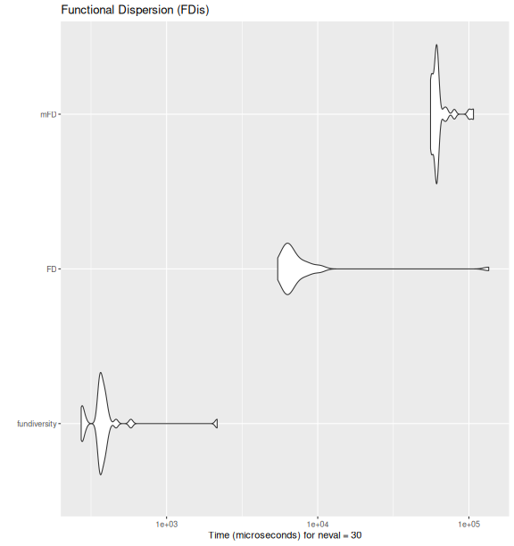
Functional Divergence (FDiv)
fdiv_bench <- microbenchmark::microbenchmark(
fundiversity = fd_fdiv(traits_birds, site_sp_birds),
mFD = mFD::alpha.fd.multidim(
traits_birds, site_sp_birds, ind_vect = "fdiv",
scaling = FALSE, verbose = FALSE
),
times = 30
)
ggplot2::autoplot(fdiv_bench) +
labs(title = "Functional Divergence (FDiv)")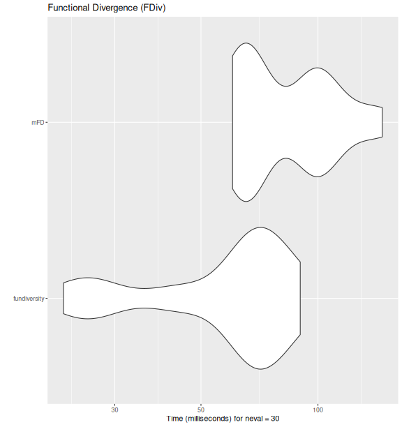
Functional Evenness (FEve)
feve_bench <- microbenchmark::microbenchmark(
fundiversity = fd_feve(traits_birds, site_sp_birds),
mFD = mFD::alpha.fd.multidim(
traits_birds, site_sp_birds, ind_vect = "feve",
scaling = FALSE, verbose = FALSE
),
times = 30
)
ggplot2::autoplot(feve_bench) +
labs(title = "Functional Evenness (FEve)")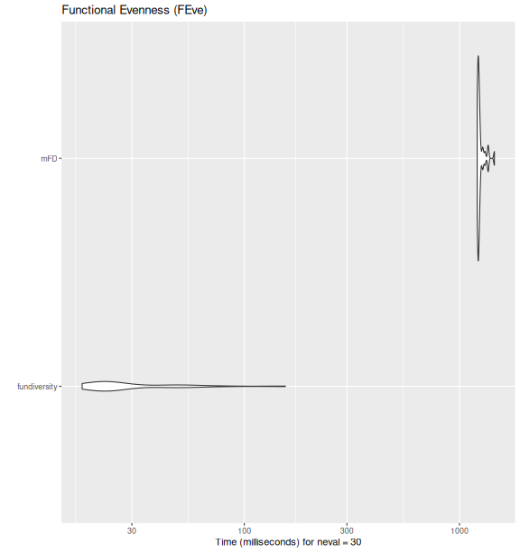
Functional Richness (FRic)
fric_bench <- microbenchmark::microbenchmark(
fundiversity = fd_fric(traits_birds, site_sp_birds),
BAT_tree = BAT::alpha(
site_sp_birds, traits_birds
),
BAT_alpha_hull = BAT::hull.alpha(
BAT::hull.build(site_sp_birds, traits_birds)
),
mFD = mFD::alpha.fd.multidim(
traits_birds, site_sp_birds, ind_vect = "fric",
scaling = FALSE, verbose = FALSE
),
times = 30
)
ggplot2::autoplot(fric_bench) +
labs(title = "Functional Richness (FRic)")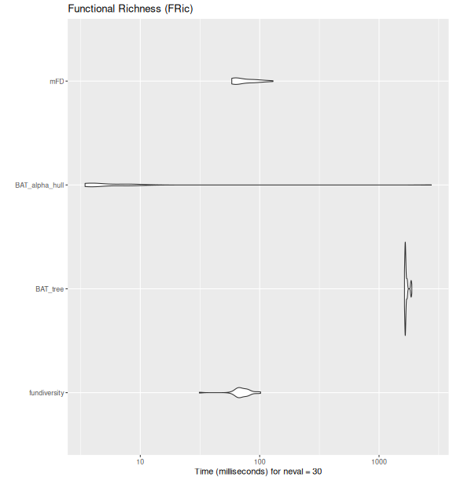
Functional Richness Intersection (FRic_intersect)
fric_bench <- microbenchmark::microbenchmark(
fundiversity = fd_fric_intersect(traits_birds, site_sp_birds) ,
betapart = betapart::functional.beta.pair(
site_sp_birds, traits_birds
),
hillR = hillR::hill_func_parti_pairwise(
site_sp_birds, traits_birds, .progress = FALSE
),
times = 30
)
ggplot2::autoplot(fric_bench) +
labs(title = "Functional Richness Intersection (FRic)")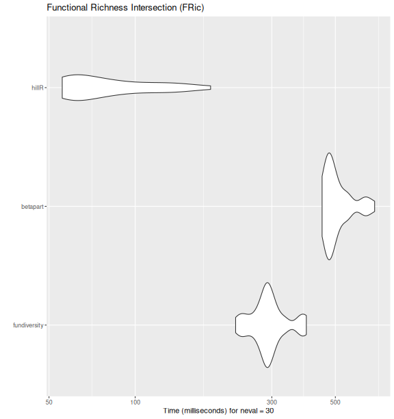
Rao’s Quadratic Entropy (Q)
raoq_bench <- fric_bench <- microbenchmark::microbenchmark(
fundiversity = fd_raoq(traits_birds, site_sp_birds),
adiv= adiv::QE(
site_sp_birds, dist_traits_birds
),
BAT_rao = BAT::rao(
site_sp_birds, distance = traits_birds
),
hillR_hill_func = hillR::hill_func(
site_sp_birds, traits_birds, fdis = FALSE
),
mFD_alpha_fd_hill = mFD::alpha.fd.hill(
site_sp_birds, dist_traits_birds, q = 2,
tau = "max"
),
times = 30
)
ggplot2::autoplot(raoq_bench) +
labs(title = "Rao's Quadatric Entropy (Q)")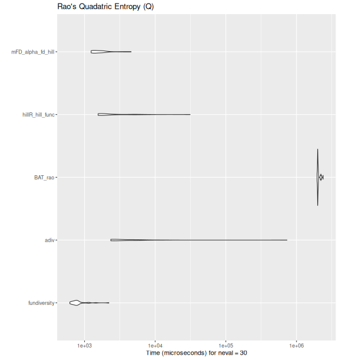
Benchmark within fundiversity
We now proceed to the performance evaluation of functions within
fundiversity with datasets of increasing sizes.
Increasing the number of species
make_more_sp <- function(n) {
traits <- do.call(rbind, replicate(n, traits_birds, simplify = FALSE))
row.names(traits) <- paste0("sp", seq_len(nrow(traits)))
site_sp <- do.call(cbind, replicate(n, site_sp_birds, simplify = FALSE))
colnames(site_sp) <- paste0("sp", seq_len(ncol(site_sp)))
list(tr = traits, si = site_sp)
}
null_sp_1000 <- make_more_sp(5)
null_sp_10000 <- make_more_sp(50)
null_sp_100000 <- make_more_sp(500)Functional Richness
bench_sp_fric <- microbenchmark::microbenchmark(
species_200 = fd_fric( traits_birds, site_sp_birds),
species_1000 = fd_fric( null_sp_1000$tr, null_sp_1000$si),
species_10000 = fd_fric( null_sp_10000$tr, null_sp_10000$si),
species_100000 = fd_fric(null_sp_100000$tr, null_sp_100000$si),
times = 30
)
ggplot2::autoplot(bench_sp_fric)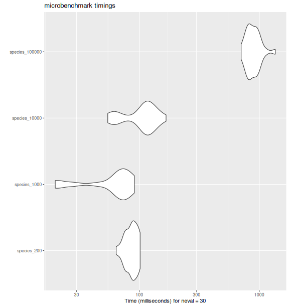
fd_fric()
with increasing number of species.
bench_sp_fric
#> Unit: milliseconds
#> expr min lq mean median uq max neval
#> species_200 64.13693 77.22506 86.41686 87.48392 95.01912 101.53571 30
#> species_1000 19.91788 48.31584 62.22163 67.09528 78.68881 90.86103 30
#> species_10000 54.59200 80.25405 106.29215 113.69053 123.96300 166.99047 30
#> species_100000 705.44201 805.23353 895.93754 872.40737 950.08097 1357.15555 30Functional Divergence
bench_sp_fdiv <- microbenchmark::microbenchmark(
species_200 = fd_fdiv( traits_birds, site_sp_birds),
species_1000 = fd_fdiv( null_sp_1000$tr, null_sp_1000$si),
species_10000 = fd_fdiv( null_sp_10000$tr, null_sp_10000$si),
species_100000 = fd_fdiv(null_sp_100000$tr, null_sp_100000$si),
times = 30
)
ggplot2::autoplot(bench_sp_fdiv)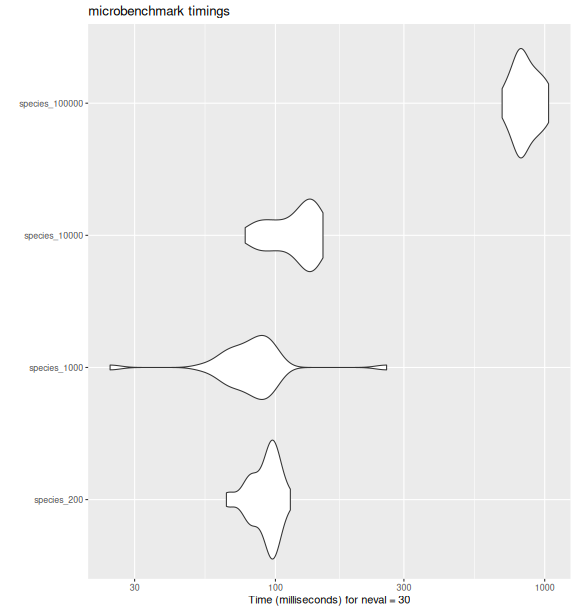
fd_fdiv()
with increasing number of species.
bench_sp_fdiv
#> Unit: milliseconds
#> expr min lq mean median uq max neval
#> species_200 65.75675 82.74022 92.22989 95.55403 98.83634 113.6111 30
#> species_1000 24.31990 71.34581 85.56509 82.23807 93.26562 258.7621 30
#> species_10000 77.21861 100.54385 119.36332 125.36045 135.46570 150.1822 30
#> species_100000 694.82638 789.91390 853.43494 836.83280 919.55921 1033.8374 30Rao’s Quadratic Entropy
bench_sp_raoq <- microbenchmark::microbenchmark(
species_200 = fd_raoq( traits_birds, site_sp_birds),
species_1000 = fd_raoq( null_sp_1000$tr, null_sp_1000$si),
species_10000 = fd_raoq( null_sp_10000$tr, null_sp_10000$si),
times = 30
)
ggplot2::autoplot(bench_sp_raoq)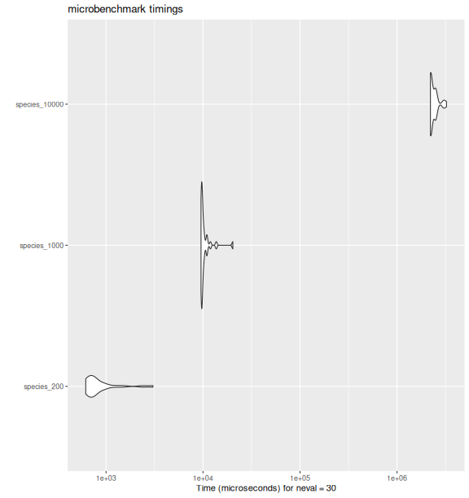
fd_raoq()
with increasing number of species.
bench_sp_raoq
#> Unit: microseconds
#> expr min lq mean median uq max
#> species_200 617.236 645.822 914.5668 737.549 897.623 3043.669
#> species_1000 9534.446 9652.328 10449.2975 9774.182 10267.441 20289.876
#> species_10000 2212780.688 2227410.464 2396306.9486 2234898.178 2507233.705 3239781.685
#> neval
#> 30
#> 30
#> 30Functional Evenness
bench_sp_feve <- microbenchmark::microbenchmark(
species_200 = fd_feve( traits_birds, site_sp_birds),
species_1000 = fd_feve( null_sp_1000$tr, null_sp_1000$si),
species_10000 = fd_feve( null_sp_10000$tr, null_sp_10000$si),
times = 15
)
ggplot2::autoplot(bench_sp_feve)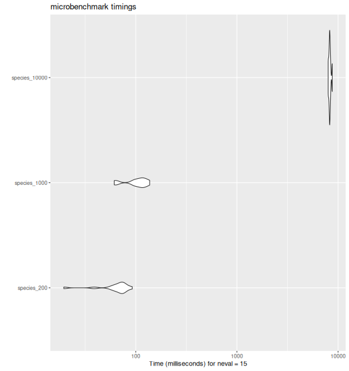
fd_feve()
with increasing number of species.
bench_sp_feve
#> Unit: milliseconds
#> expr min lq mean median uq max neval
#> species_200 19.45845 61.86210 66.13876 70.94195 75.60393 92.3494 15
#> species_1000 61.28659 96.18897 103.89838 111.66572 118.36332 137.2943 15
#> species_10000 7974.82839 8187.74411 8294.13681 8273.52413 8376.39503 8759.0515 15Comparing between indices
all_bench_sp <- list(fric = bench_sp_fric,
fdiv = bench_sp_fdiv,
raoq = bench_sp_raoq,
feve = bench_sp_feve) %>%
bind_rows(.id = "fd_index") %>%
mutate(n_sp = gsub("species_", "", expr) %>%
as.numeric())
all_bench_sp %>%
ggplot(aes(n_sp, time * 1e-9, color = fd_index)) +
geom_point(alpha = 1/3) +
geom_smooth() +
scale_x_log10() +
scale_y_log10() +
scale_color_brewer(type = "qual",
labels = c(fric = "FRic", fdiv = "FDiv", raoq = "Rao's Q",
feve = "FEve")) +
labs(title = "Performance comparison between indices",
x = "# of species", y = "Time (in seconds)",
color = "FD index") +
theme_bw() +
theme(aspect.ratio = 1)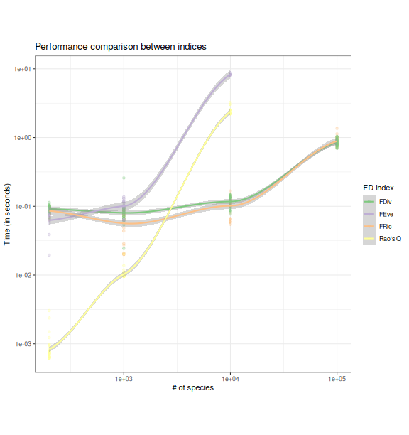
fundiversity with increasing number of
species. Smoothed trend lines and standard error envelopes ares
shown.Increasing the number of sites
make_more_sites <- function(n) {
site_sp <- do.call(rbind, replicate(n, site_sp_birds, simplify = FALSE))
rownames(site_sp) <- paste0("s", seq_len(nrow(site_sp)))
site_sp
}
site_sp_100 <- make_more_sites(12)
site_sp_1000 <- make_more_sites(120)
site_sp_10000 <- make_more_sites(1200)Functional Richness
bench_sites_fric <- microbenchmark::microbenchmark(
sites_10 = fd_fric(traits_birds, site_sp_birds),
sites_100 = fd_fric(traits_birds, site_sp_100),
sites_1000 = fd_fric(traits_birds, site_sp_1000),
sites_10000 = fd_fric(traits_birds, site_sp_10000),
times = 15
)
ggplot2::autoplot(bench_sites_fric)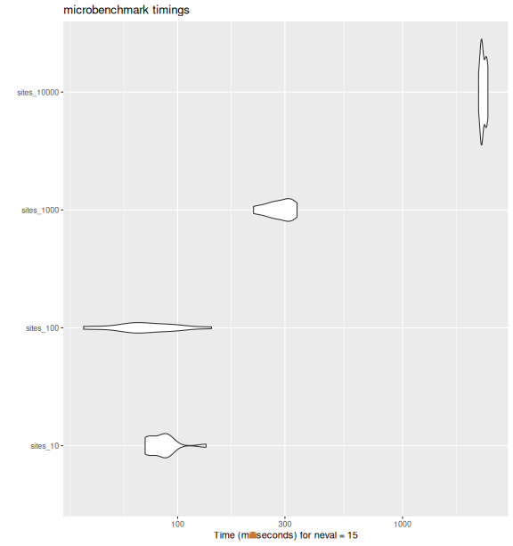
fd_fric()
with increasing number of sites.
bench_sites_fric
#> Unit: milliseconds
#> expr min lq mean median uq max neval
#> sites_10 71.68416 74.57767 86.00700 86.54204 89.98176 133.8206 15
#> sites_100 38.16260 61.20081 75.49481 68.14976 89.16593 141.3453 15
#> sites_1000 217.49465 259.31534 284.66718 280.32306 315.58773 339.4681 15
#> sites_10000 2178.74594 2241.01618 2287.08006 2262.96084 2341.91784 2396.5195 15Functional Divergence
bench_sites_fdiv <- microbenchmark::microbenchmark(
sites_10 = fd_fdiv(traits_birds, site_sp_birds),
sites_100 = fd_fdiv(traits_birds, site_sp_100),
sites_1000 = fd_fdiv(traits_birds, site_sp_1000),
sites_10000 = fd_fdiv(traits_birds, site_sp_10000),
times = 15
)
ggplot2::autoplot(bench_sites_fdiv)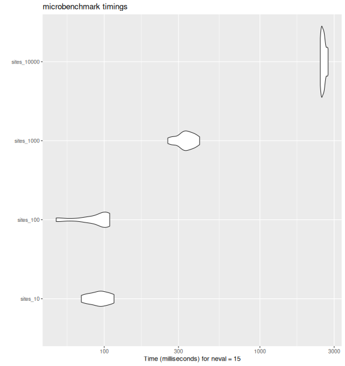
fd_fdiv()
with increasing number of sites.
bench_sites_fdiv
#> Unit: milliseconds
#> expr min lq mean median uq max neval
#> sites_10 71.26430 81.32178 93.05191 92.95528 102.5015 115.5599 15
#> sites_100 49.15161 78.18654 87.77382 98.11574 102.1231 108.4241 15
#> sites_1000 255.95116 314.93415 334.68212 340.96382 365.8025 410.0258 15
#> sites_10000 2442.80506 2489.52070 2563.07758 2563.32031 2603.2711 2742.8240 15Rao’s Quadratic Entropy
bench_sites_raoq = microbenchmark::microbenchmark(
sites_10 = fd_raoq(traits = NULL, site_sp_birds, dist_traits_birds),
sites_100 = fd_raoq(traits = NULL, site_sp_100, dist_traits_birds),
sites_1000 = fd_raoq(traits = NULL, site_sp_1000, dist_traits_birds),
sites_10000 = fd_raoq(traits = NULL, site_sp_10000, dist_traits_birds),
times = 15
)
ggplot2::autoplot(bench_sites_raoq)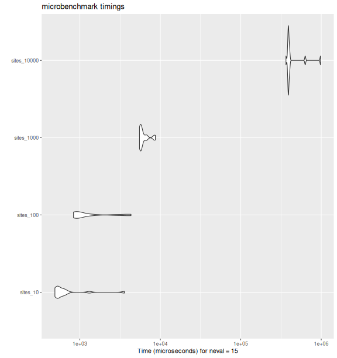
fd_raoq()
with increasing number of sites.
bench_sites_raoq
#> Unit: microseconds
#> expr min lq mean median uq max neval
#> sites_10 489.460 528.4935 815.2409 544.496 634.829 3576.162 15
#> sites_100 834.088 870.0800 1523.9049 968.512 1349.571 4322.532 15
#> sites_1000 5510.532 5648.2775 6217.1693 5722.048 6303.896 8682.980 15
#> sites_10000 364585.747 387482.0435 446235.0449 391929.816 401485.191 979961.408 15Functional Evenness
bench_sites_feve <- microbenchmark::microbenchmark(
sites_10 = fd_feve(traits = NULL, site_sp_birds, dist_traits_birds),
sites_100 = fd_feve(traits = NULL, site_sp_100, dist_traits_birds),
sites_1000 = fd_feve(traits = NULL, site_sp_1000, dist_traits_birds),
sites_10000 = fd_feve(traits = NULL, site_sp_10000, dist_traits_birds),
times = 15
)
ggplot2::autoplot(bench_sites_feve)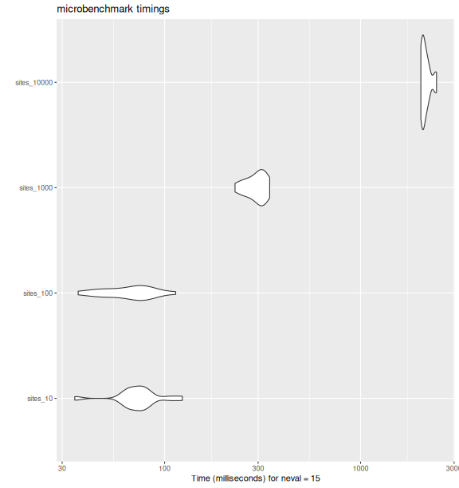
fd_feve()
with increasing number of sites
bench_sites_feve
#> Unit: milliseconds
#> expr min lq mean median uq max neval
#> sites_10 34.80425 65.51428 75.59681 75.20675 80.92903 123.1772 15
#> sites_100 36.21243 52.06759 67.81010 70.84707 79.89431 113.9671 15
#> sites_1000 228.73873 272.52938 294.80104 305.90444 318.44339 343.6069 15
#> sites_10000 2030.46418 2056.30757 2150.92871 2105.95845 2203.93375 2441.4576 15Comparing between indices
all_bench_sites <- list(fric = bench_sites_fric,
fdiv = bench_sites_fdiv,
raoq = bench_sites_raoq,
feve = bench_sites_feve) %>%
bind_rows(.id = "fd_index") %>%
mutate(n_sites = as.numeric(gsub("sites", "", expr, fixed = TRUE)))
all_bench_sites %>%
ggplot(aes(n_sites, time * 1e-9, color = fd_index)) +
geom_point(alpha = 1/3) +
geom_smooth() +
scale_x_log10() +
scale_y_log10() +
scale_color_brewer(type = "qual",
labels = c(fric = "FRic", fdiv = "FDiv", raoq = "Rao's Q",
feve = "FEve")) +
labs(title = "Performance comparison between indices",
x = "# of sites", y = "Time (in seconds)",
color = "FD index") +
theme_bw() +
theme(aspect.ratio = 1)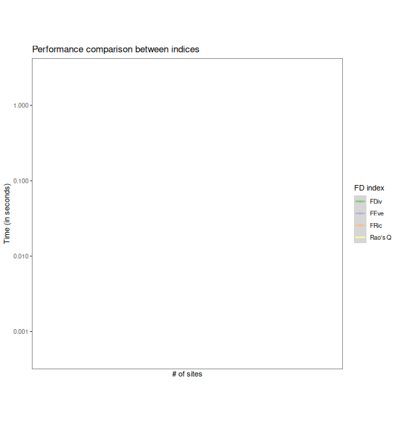
fundiversity with increasing number of
sites. Smoothed trend lines and standard error envelopes ares
shown.Session info of the machine on which the benchmark was ran and time it took to run
#> seconds needed to generate this document: 600.353 sec elapsed
#> ─ Session info ────────────────────────────────────────────────────────────────────────
#> setting value
#> version R version 4.5.3 (2026-03-11)
#> os Ubuntu 24.04.4 LTS
#> system x86_64, linux-gnu
#> ui Positron
#> language (EN)
#> collate en_GB.UTF-8
#> ctype en_GB.UTF-8
#> tz Europe/Berlin
#> date 2026-03-30
#> pandoc 3.1.3 @ /bin/pandoc
#> quarto 1.9.12 @ /opt/quarto/bin/quarto
#>
#> ─ Packages ────────────────────────────────────────────────────────────────────────────
#> package * version date (UTC) lib source
#> abind 1.4-8 2024-09-12 [1] RSPM (R 4.5.0)
#> ade4 1.7-24 2026-03-21 [1] RSPM
#> adegraphics 1.0-22 2025-04-07 [1] RSPM
#> adiv 2.2.1 2024-02-19 [1] RSPM
#> ape 5.8-1 2024-12-16 [1] RSPM
#> base64enc 0.1-6 2026-02-02 [1] RSPM (R 4.5.0)
#> BAT 2.11.0 2025-07-29 [1] RSPM
#> betapart 1.6.1 2025-07-24 [1] RSPM
#> bit 4.6.0 2025-03-06 [1] RSPM (R 4.5.0)
#> bit64 4.6.0-1 2025-01-16 [1] CRAN (R 4.5.2)
#> boot 1.3-32 2025-08-29 [2] CRAN (R 4.5.3)
#> cachem 1.1.0 2024-05-16 [1] RSPM (R 4.5.0)
#> caret 7.0-1 2024-12-10 [1] RSPM
#> class 7.3-23 2025-01-01 [2] CRAN (R 4.5.3)
#> cli 3.6.5 2025-04-23 [1] RSPM (R 4.5.0)
#> cluster 2.1.8.2 2026-02-05 [2] CRAN (R 4.5.3)
#> clusterGeneration 1.3.8 2023-08-16 [1] RSPM
#> coda 0.19-4.1 2024-01-31 [1] RSPM
#> codetools 0.2-20 2024-03-31 [2] CRAN (R 4.5.3)
#> combinat 0.0-8 2012-10-29 [1] RSPM
#> crayon 1.5.3 2024-06-20 [1] CRAN (R 4.5.2)
#> data.table 1.18.2.1 2026-01-27 [1] RSPM (R 4.5.0)
#> deldir 2.0-4 2024-02-28 [1] RSPM (R 4.5.0)
#> dendextend 1.19.1 2025-07-15 [1] RSPM
#> DEoptim 2.2-8 2022-11-11 [1] RSPM
#> dichromat 2.0-0.1 2022-05-02 [1] RSPM (R 4.5.0)
#> digest 0.6.39 2025-11-19 [1] RSPM
#> doParallel 1.0.17 2022-02-07 [1] RSPM (R 4.5.0)
#> doSNOW 1.0.20 2022-02-04 [1] RSPM
#> dplyr * 1.2.0 2026-02-03 [1] RSPM (R 4.5.0)
#> e1071 1.7-17 2025-12-18 [1] RSPM
#> evaluate 1.0.5 2025-08-27 [1] RSPM (R 4.5.0)
#> expm 1.0-0 2024-08-19 [1] RSPM
#> farver 2.1.2 2024-05-13 [1] CRAN (R 4.5.2)
#> fastcluster 1.3.0 2025-05-07 [1] RSPM
#> fastmap 1.2.0 2024-05-15 [1] RSPM (R 4.5.0)
#> fastmatch 1.1-8 2026-01-17 [1] RSPM
#> FD 1.0-12.3 2023-11-26 [1] RSPM
#> foreach 1.5.2 2022-02-02 [1] RSPM
#> fundiversity * 1.1.1.9000 2026-03-29 [1] local
#> future * 1.69.0 2026-01-16 [1] RSPM (R 4.5.0)
#> future.apply 1.20.2 2026-02-20 [1] RSPM (R 4.5.0)
#> generics 0.1.4 2025-05-09 [1] RSPM (R 4.5.0)
#> geometry 0.5.2 2025-02-08 [1] RSPM
#> ggplot2 * 4.0.2 2026-02-03 [1] RSPM (R 4.5.0)
#> globals 0.19.0 2026-02-02 [1] RSPM (R 4.5.0)
#> glue 1.8.0 2024-09-30 [1] RSPM (R 4.5.0)
#> gower 1.0.2 2024-12-17 [1] RSPM
#> gridExtra 2.3 2017-09-09 [1] RSPM
#> gtable 0.3.6 2024-10-25 [1] RSPM
#> hardhat 1.4.2 2025-08-20 [1] RSPM
#> hillR 0.5.2 2023-08-19 [1] RSPM
#> hms 1.1.4 2025-10-17 [1] RSPM (R 4.5.0)
#> htmltools 0.5.9 2025-12-04 [1] RSPM
#> htmlwidgets 1.6.4 2023-12-06 [1] RSPM (R 4.5.0)
#> httr 1.4.8 2026-02-13 [1] RSPM (R 4.5.0)
#> hypervolume 3.1.6 2025-06-15 [1] RSPM
#> igraph 2.2.2 2026-02-12 [1] RSPM (R 4.5.0)
#> interp 1.1-6 2024-01-26 [1] RSPM
#> ipred 0.9-15 2024-07-18 [1] RSPM
#> iterators 1.0.14 2022-02-05 [1] RSPM
#> itertools 0.1-3 2014-03-12 [1] RSPM
#> jpeg 0.1-11 2025-03-21 [1] RSPM (R 4.5.0)
#> jsonlite 2.0.0 2025-03-27 [1] CRAN (R 4.5.2)
#> KernSmooth 2.23-26 2025-01-01 [2] CRAN (R 4.5.3)
#> knitr 1.51 2025-12-20 [1] RSPM (R 4.5.0)
#> ks 1.15.1 2025-05-04 [1] RSPM
#> lattice 0.22-9 2026-02-09 [2] CRAN (R 4.5.3)
#> latticeExtra 0.6-31 2025-09-10 [1] RSPM
#> lava 1.8.2 2025-10-30 [1] RSPM
#> lifecycle 1.0.5 2026-01-08 [1] RSPM (R 4.5.0)
#> listenv 0.10.0 2025-11-02 [1] RSPM (R 4.5.0)
#> lpSolve 5.6.23 2024-12-14 [1] RSPM
#> lubridate 1.9.5 2026-02-04 [1] RSPM (R 4.5.0)
#> magic 1.6-1 2022-11-16 [1] RSPM
#> magrittr 2.0.4 2025-09-12 [1] RSPM (R 4.5.0)
#> maps 3.4.3 2025-05-26 [1] RSPM (R 4.5.0)
#> MASS 7.3-65 2025-02-28 [2] CRAN (R 4.5.3)
#> Matrix 1.7-4 2025-08-28 [2] CRAN (R 4.5.3)
#> mclust 6.1.2 2025-10-31 [1] RSPM
#> memoise 2.0.1 2021-11-26 [1] RSPM (R 4.5.0)
#> mFD 1.0.7 2024-02-26 [1] RSPM
#> mgcv 1.9-4 2025-11-07 [1] RSPM (R 4.5.0)
#> microbenchmark 1.5.0 2024-09-04 [1] RSPM
#> minpack.lm 1.2-4 2023-09-11 [1] RSPM
#> mnormt 2.1.2 2026-01-27 [1] RSPM
#> ModelMetrics 1.2.2.2 2020-03-17 [1] RSPM
#> mvtnorm 1.3-5 2026-03-11 [1] RSPM
#> nlme 3.1-168 2025-03-31 [2] CRAN (R 4.5.3)
#> nls2 0.3-4 2024-07-14 [1] RSPM
#> nnet 7.3-20 2025-01-01 [2] CRAN (R 4.5.3)
#> numDeriv 2016.8-1.1 2019-06-06 [1] RSPM
#> optimParallel 1.0-2 2021-02-11 [1] RSPM
#> otel 0.2.0 2025-08-29 [1] RSPM
#> palmerpenguins 0.1.1 2022-08-15 [1] RSPM
#> parallelly 1.46.1 2026-01-08 [1] RSPM (R 4.5.0)
#> patchwork 1.3.2 2025-08-25 [1] RSPM
#> pdist 1.2.1 2022-05-02 [1] RSPM
#> permute 0.9-10 2026-02-06 [1] RSPM (R 4.5.0)
#> phangorn 2.12.1 2024-09-17 [1] RSPM
#> phylobase 0.8.12 2024-01-30 [1] RSPM
#> phytools 2.5-2 2025-09-19 [1] RSPM
#> picante 1.8.2 2020-06-10 [1] RSPM
#> pillar 1.11.1 2025-09-17 [1] RSPM (R 4.5.0)
#> pkgconfig 2.0.3 2019-09-22 [1] CRAN (R 4.5.2)
#> PlotTools 0.4.0 2026-01-29 [1] RSPM
#> plyr 1.8.9 2023-10-02 [1] RSPM (R 4.5.0)
#> png 0.1-8 2022-11-29 [1] RSPM (R 4.5.0)
#> pracma 2.4.6 2025-10-22 [1] RSPM
#> prettyunits 1.2.0 2023-09-24 [1] CRAN (R 4.5.2)
#> pROC 1.19.0.1 2025-07-31 [1] RSPM
#> prodlim 2026.03.11 2026-03-11 [1] RSPM
#> progress 1.2.3 2023-12-06 [1] CRAN (R 4.5.2)
#> proto 1.0.0 2016-10-29 [1] RSPM
#> proxy 0.4-29 2025-12-29 [1] RSPM
#> purrr 1.2.1 2026-01-09 [1] RSPM (R 4.5.0)
#> quadprog 1.5-8 2019-11-20 [1] RSPM
#> R6 2.6.1 2025-02-15 [1] RSPM (R 4.5.0)
#> rbibutils 2.4.1 2026-01-21 [1] RSPM
#> rcdd 1.6-1 2026-01-12 [1] RSPM
#> RColorBrewer 1.1-3 2022-04-03 [1] CRAN (R 4.5.2)
#> Rcpp 1.1.1 2026-01-10 [1] RSPM (R 4.5.0)
#> Rdpack 2.6.6 2026-02-08 [1] RSPM
#> recipes 1.3.1 2025-05-21 [1] RSPM
#> reshape2 1.4.5 2025-11-12 [1] RSPM (R 4.5.0)
#> rgl 1.3.36 2026-03-06 [1] RSPM
#> rlang 1.1.7 2026-01-09 [1] RSPM (R 4.5.0)
#> rncl 0.8.9 2026-01-21 [1] RSPM
#> RNeXML 2.4.11 2023-02-01 [1] RSPM
#> rpart 4.1.24 2025-01-07 [2] CRAN (R 4.5.3)
#> S7 0.2.1 2025-11-14 [1] RSPM
#> scales 1.4.0 2025-04-24 [1] RSPM (R 4.5.0)
#> scatterplot3d 0.3-45 2026-02-23 [1] RSPM
#> sessioninfo 1.2.3 2025-02-05 [1] RSPM (R 4.5.0)
#> snow 0.4-4 2021-10-27 [1] RSPM (R 4.5.0)
#> sp 2.2-1 2026-02-13 [1] RSPM (R 4.5.0)
#> stringi 1.8.7 2025-03-27 [1] RSPM (R 4.5.0)
#> stringr 1.6.0 2025-11-04 [1] RSPM
#> survival 3.8-6 2026-01-16 [2] CRAN (R 4.5.3)
#> terra 1.9-11 2026-03-26 [1] RSPM
#> tibble 3.3.1 2026-01-11 [1] RSPM (R 4.5.0)
#> tictoc 1.2.1 2024-03-18 [1] RSPM
#> tidyr 1.3.2 2025-12-19 [1] RSPM
#> tidyselect 1.2.1 2024-03-11 [1] CRAN (R 4.5.2)
#> timechange 0.4.0 2026-01-29 [1] RSPM (R 4.5.0)
#> timeDate 4052.112 2026-01-28 [1] RSPM
#> TreeTools 2.2.0 2026-03-20 [1] RSPM
#> uuid 1.2-2 2026-01-23 [1] RSPM
#> vctrs 0.7.1 2026-01-23 [1] RSPM (R 4.5.0)
#> vegan 2.7-2 2025-10-08 [1] RSPM
#> viridis 0.6.5 2024-01-29 [1] RSPM
#> viridisLite 0.4.3 2026-02-04 [1] RSPM (R 4.5.0)
#> withr 3.0.2 2024-10-28 [1] CRAN (R 4.5.2)
#> xfun 0.56 2026-01-18 [1] RSPM (R 4.5.0)
#> XML 3.99-0.22 2026-02-10 [1] RSPM (R 4.5.0)
#> xml2 1.5.2 2026-01-17 [1] RSPM (R 4.5.0)
#>
#> [1] /home/hgruson/.local/share/R/x86_64-pc-linux-gnu-library/4.5
#> [2] /opt/R/4.5.3/lib/R/library
#> * ── Packages attached to the search path.
#>
#> ───────────────────────────────────────────────────────────────────────────────────────